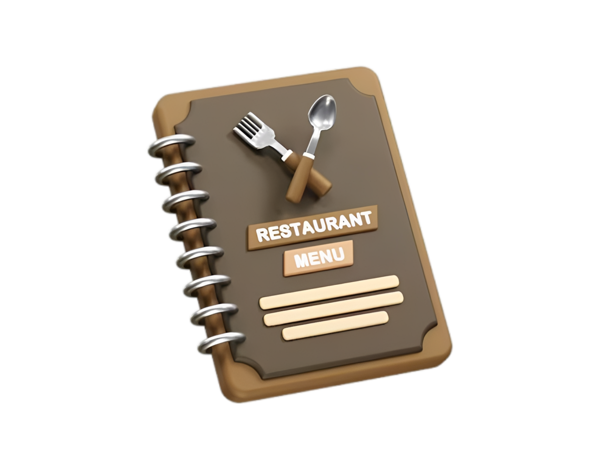

CARDÁPIO
Hambúrgueres
Brasa Classic
Pão brioche, carne artesanal 160g, queijo cheddar, alface, tomate e molho especial.
Bacon Supreme
Pão brioche, carne artesanal 160g, cheddar, bacon crocante e molho barbecue.
Duplo Brasa
Frango empanado crocante, queijo, alface, tomate e maionese da casa.
Acompanhamentos
Batata Frita
Porção de batatas crocantes acompanhada de molho especial.
Batata com Cheddar e Bacon
Batatas crocantes, cheddar cremoso e bacon crocante.
Bebidas
Refrigerante
Lata 350ml.
Suco Natural
Sabores disponíveis conforme o dia.
Água Mineral
Com ou sem gás.
